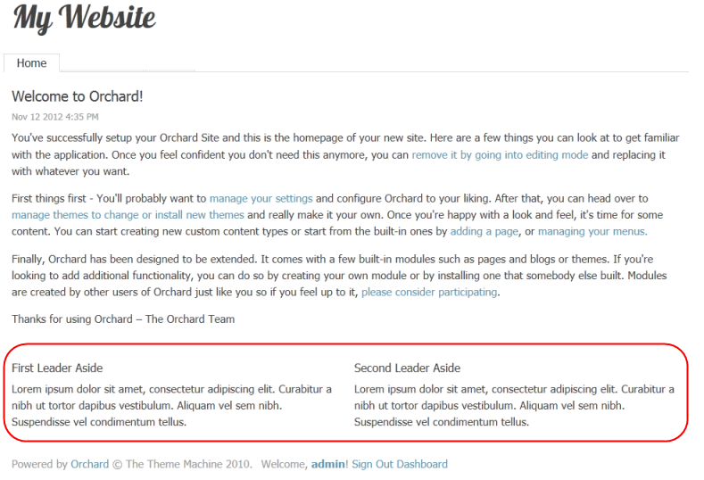
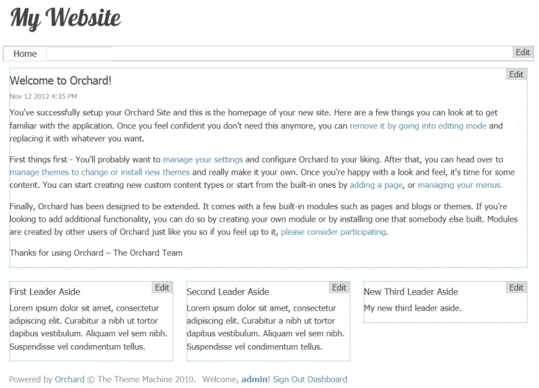

This topic targets, and was tested with, the Orchard 1.8 release.
This walkthrough provides a glimpse of the features that Orchard has to offer, provided as a step-by-step guide. If this is your first time using Orchard, this document is for you!
Getting Started with Orchard
Being new to Orchard, you should know the right place where you can find the resources and latest information about Orchard.
- Orchard Beginner
- Orchard in GitHub - Orchard Code Repository
- Orchard Discussion Forum - Discussion area for Orchard
- Orchard Documentation - Documentation area for Orchard
- Orchard Community Websites - Community sites on Orchard from all over the world
- Orchard CMS Weekly Meeting
This topic assumes that you have already installed Orchard and set up your website. If you haven't, follow the instructions in Installing Orchard.
There are plenty of options to get up and running with Orchard without installing Orchard on your local machine or local IIS Server.
Try Orchard
Try Orchard! is a showcase for the Orchard content management framework: you can try how Orchard feels by checking out an already running demo site where you can play with Orchard as you wish.
No registration, no setup, nothing required, you can just go to Try Orchard!, open one of the continuously re-installed demo sites and play with it. This is the simplest way of taking the first steps with Orchard.
Be aware though that Try Orchard! is really just for testing: since the demo sites are wiped out hourly you don't try to publish your blog there!


DotNest : Orchard SaaS provider
DotNest is the Orchard SaaS provider: this means that you can simply register and create Orchard websites that run in the cloud without any hassle. Your website will just work: you don't have to deploy and later upgrade it, you can just use it.
With DotNest you can try out Orchard very simply, very quickly and since your website is already hosted for you you can also show it to everybody. Apart from getting used to the user interface and features of Orchard you can also get into the basics of Orchard theme development with it and style and customize your Orchard website in a lot of ways.
Convenience does come with disadvantages: due to the architecture of DotNest you can't install custom modules, so you have to use what is already available (that however should be enough for a big part of websites).
1) What is DotNest

2) Click New Tenant to create a new tenant on DotNest

3) Fill in the required details to create a New Tenant

3) New Tenant successfully created

Orchard on Azure Websites
After a free registration you can create websites from the Azure Gallery where you can select Orchard to deploy in one click too.
Your Orchard site on Azure Websites will be completely under your control: you can install any module and theme you want too. However this also comes with responsibilities: you have to maintain your website yourself, upgrade and fix it as necessary.


Changing The Layout Of The Home Page
Out of the box, Orchard applies a theme to your website known as the "Theme Machine". The Theme Machine includes CSS styles and a layout. Orchard allows you to selectively include or exclude portions (zones) of the layout on each page of your website.

The Navigation zone contains a menu with a single tab, Home. The TripelFirst, TripleSecond and TripleThird zones at the bottom of the page are populated with dummy text in the First Leader Aside, Second Leader Aside and Third Leader Aside paragraphs.
In addition to zones, every page has a central region (In this case, the text from "Welcome to Orchard" to "Thank you for using Orchard") which, for this tutorial, will be referred to as the Body of the page.

Although the Theme Machine has many possible zones defined, on a given page the only zones visible will be zones that have had widgets added to them (you can learn more about widgets here). The Navigation, TripelFirst, TripelSecond and TripelThird zones are visible on the home page because they contain widgets.
1) Select Widgets from the Dashboard.
The Widgets management page opens with the Default layer selected. Any zone that is visible in the Default layer will appear on all pages. Therefore, the Navigation zone is visible on all web pages and has a Main Menu widget. The Main Menu widget is annotated in green because it has been added to a zone in the current layer.

2) Select the HomePage layer to see which zones are visible for the home page.
Widgets which have been added to zones in the selected layer will be annotated in green (FirstLeaderAside, SecondLeaderAside and ThirdLeaderAside). Widgets which have been added to zones in other layers will be annotated in gray (Main Menu).


The TripelFirst, TripelSecond, and TripelThird zones on the home page have widgets in them and are visible. Removing all of the widgets in a zone will make the zone invisible.
3) Select Remove for the Third Leader Aside widget.

The TripelThird zone will no longer be visible on the home page.

4) Select Add for the TripelThird zone to add a widget to the zone.

5) Select the HTML Widget to add this type of widget to the TripelThird zone.
6) Enter a title for your widget and some content.

7) Save the new widget.
8) Select Your Site in the upper-left side of the Dashboard to view the modified home page with the new TripelThird zone.

Editing The Content Of The Home Page
Orchard provides a feature that makes it easy for you to edit the content in a zone or the page body. To turn on this feature you must enable the Content Control Wrapper and Widget Control Wrapper modules
1) Select Modules on the Dashboard.
2) Enable Content Control Wrapper
3) Enable Widget Control Wrapper

Once these modules are enabled, you can edit the contents of an individual zone by clicking the Edit link (at the top right) in the zone.

4) Select the Edit link for the TripelFirst zone of the home page.
5) Change the title, and optionally, change or remove the existing body text for the zone.
Inserting a Media Item
6) Select Insert Media Item.

7) Click Create Folder.

8) Name the folder myImages and click Save.

9) Click the folder myImages, and then click Import

10) Click My Computer and then click in the central zone to browse for an image. If you prefer you can drop your image into the central zone.

11) Close the dialog.

12) Click the image and click Select.

13) If needed, resize the image using the handlers so that later it fits nicely into the zone. Then click Save to save the changes to the widget.

The home page is automatically displayed with the updated zone.

14) Select the Edit link for the Body of the page.

Orchard will display the Edit Page screen.
Note: The Edit Page screen can also be reached from the Dashboard by selecting Content on the Dashboard and then selecting Edit for the page you are interested in.
15) Enter some text for the content.
16) Select Publish Now at the bottom of the page to make the updates to the page visible immediately.

Adding a New Page to Your Site
1) In the Orchard Dashboard, under New, select Page.
2) Enter a title for the page. When you enter a title for the page and save it (for example, "Download"), the permalink (URL) for the page will be filled in automatically ("download"). You can edit this link if you prefer a different URL.
3) Enter some text for the content page body.

4) In the Tags field, add comma-separated tags such as "download" and "Orchard" so that you can search and filter using those tags later.
5) Check Show on main menu and enter the menu text ("Downloads") to use in the site's main menu.
6) Select Publish Now to make the updates to the page visible immediately. You can also save the page as a draft (to edit later before publishing), or you can choose to publish the page at a specific date and time.

7) Select Your Site in the upper-left side of the Dashboard to view the modified home page with the new menu. Clik Downloads and you will see your new page.
Adding New Layer for a Page
To change the layout of your new page without affecting the rest of the site you can create a new layer, that will be applied only to the Downloads page. Then you can place some widgets on that layer and they will be visible only in the Downloads page.
1) Go to the Dashboard and select Widgets. Then click add a new layer to add a new layer for this page which will allow you to customize the layout for the new page at a later point in time.

2) Write a name for the layer, a description, and a layer rule: url"~/download". This will instruct the Orchard System to show the widgets in this layer only when the url of the browser is pointing to "download". Select Save.

Adding a New HTML Widget
3) To check that your layer rule is working you can add a widget to it. Ensure that Current Layer is Download. Click Add in AsideFirst.

4) Add a new Html Widget.

5) Write a title and a body for it. Save it.

6) Select Your Site in the upper-left side of the Dashboard. Navigate to Downloads. You should see the custom layout.

Selecting A Theme
To customize the look and feel of the Orchard website you change the theme.
1) On the Orchard Dashboard, select Themes. The currently installed themes are listed.
2) To download new themes, select the Gallery tab.
3) Search for PJS.Bootstrap to find the PJS.Bootstrap Theme. Install the PJS.Bootstrap theme.
4) Select the Installed tab.
After a theme has been installed it appears as an option in the Available section on the Installed tab. In the following illustration, the PJS.Bootstrap theme has been installed so it appears in the Available section. (The current theme for the site is PJS.Bootstrap.)
5) To see how your site will look with an available them, select Preview for the theme. To apply an available theme to your site select Set Current for the theme. For more details, see Previewing and Applying a Theme and Installing Themes.


Extending Orchard With Modules And Features
A key feature of Orchard is the ability to add new features in order to extend the functionality of your site. The primary way to do this is by installing modules. You can think of a module as a package of files (in a .zip folder) that can be installed on your site. To view the modules that are included with Orchard, in the Orchard Dashboard, click Modules and then click the Installed tab in the Modules screen.

Orchard provides some built-in modules, and you can install new modules. For details, see Installing and Upgrading Modules and Registering additional gallery feeds.
Individual modules can expose features that can be independently enabled or disabled. To view the features exposed by the built-in modules in Orchard, click the Features tab in the Modules screen.

Each feature has an Enable or Disable link (depending on its current state), as well as an optional list of dependencies that must also be enabled for a specific feature. The documentation throughout this site describes the variety of features in Orchard and how you can use them to customize your site's user interface and behavior.
Change History
- Updates for Orchard 1.8
- 9-04-14: Added new sections for how to get started with Orchard and how to get up and running with Orchard : Try Orchard, DotNest, Azure Websites. Updated screen shots for themes (PJS.Bootstrap Theme), modules and control wrappers.
- 4-22-14: Media selection is different now, updated that part. Adding a widget layer is not suggested anymore when adding a new page, updated that part. Link to registering additional gallery feeds was not working. Updated several screenshots. Added capitalization to section headers.
- Updates for Orchard 1.6
- 11-25-12: Added section describing how to change the layout for a page by enabling/disabling zones. Removed section on Creating a Blog (which already has it's own topic).
- Updates for Orchard 1.1
- 3-14-11: Updated screen shots showing updated menus, and updated dashboard and settings options.